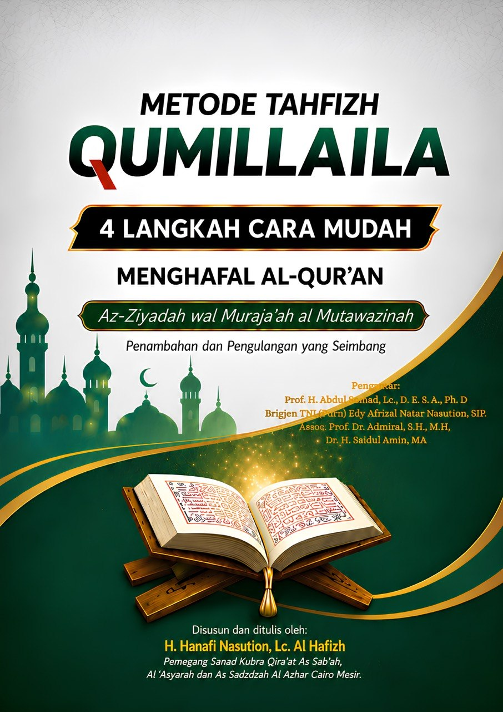
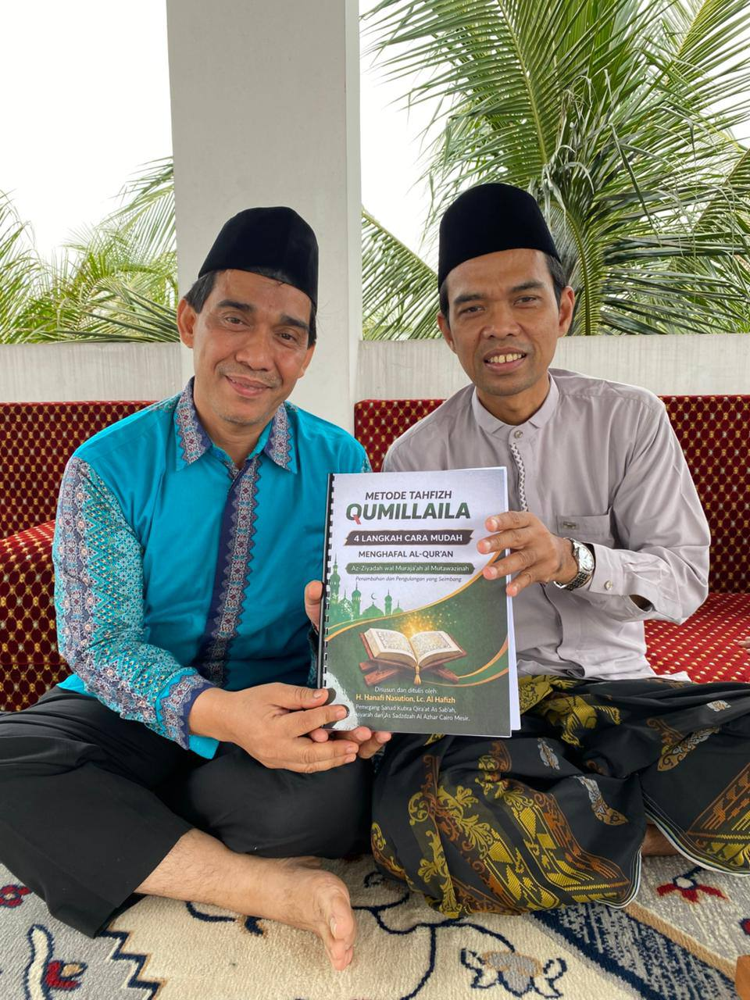
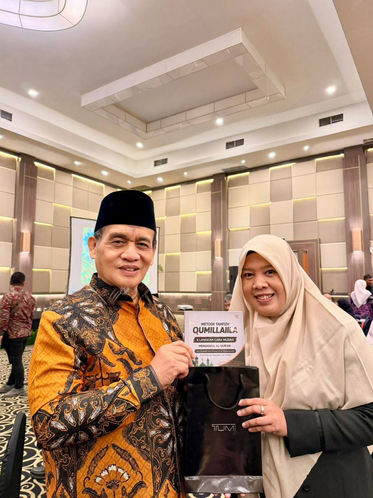
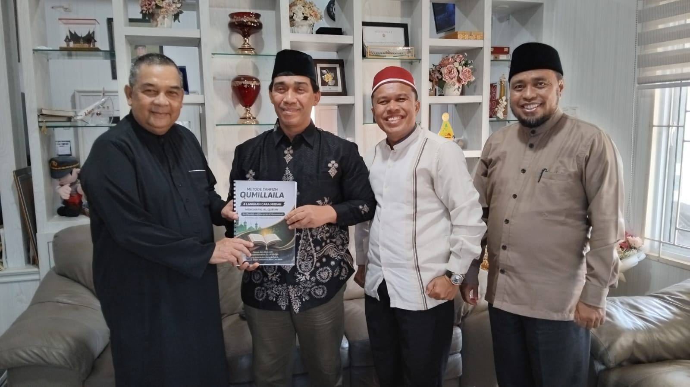
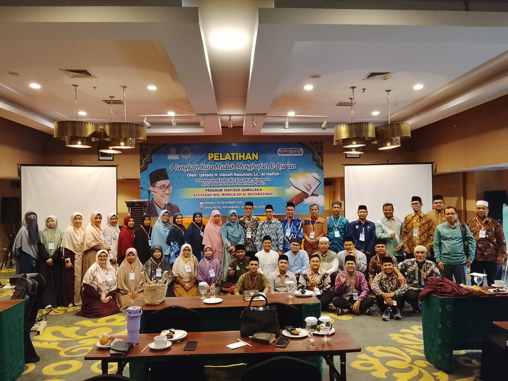
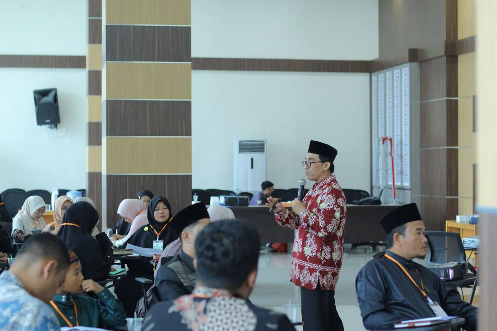
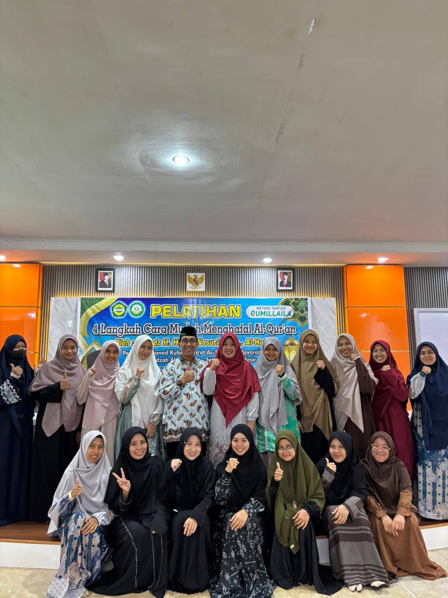
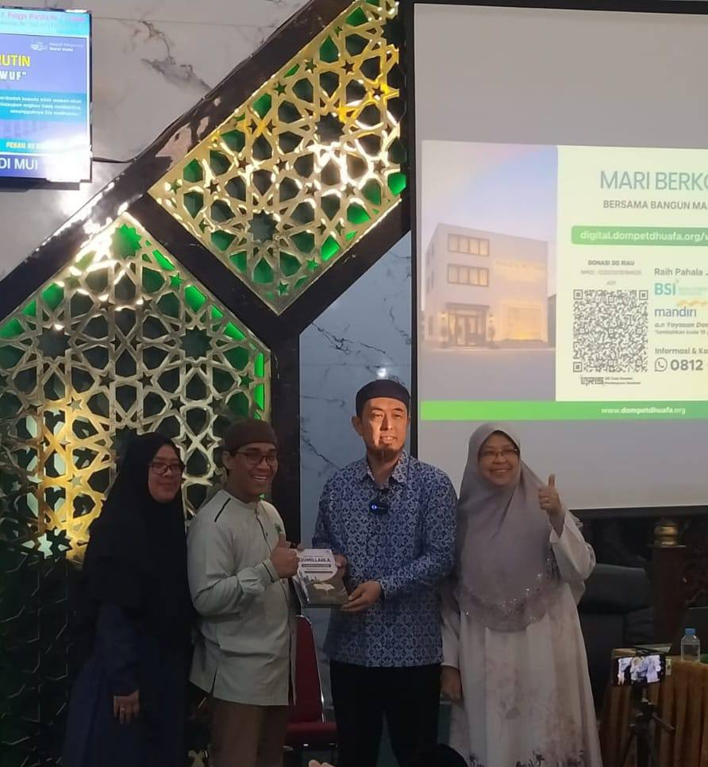
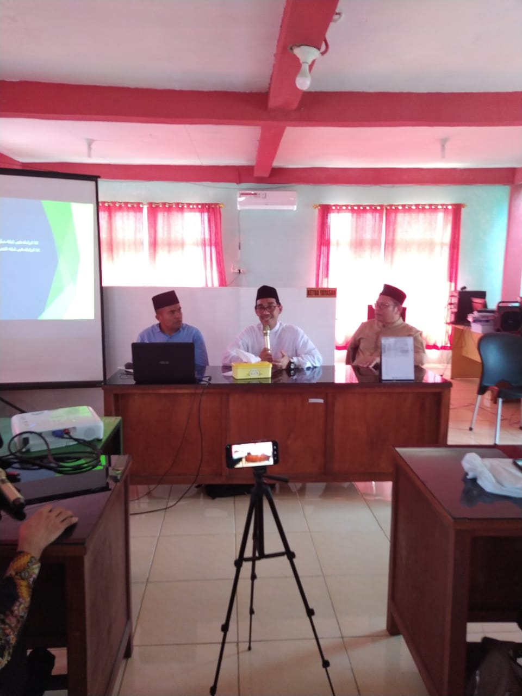

Cara Mudah Menghafal Al-Qur'an Dengan Metode Qumillaila
4 Langkah praktis menghafal dan mengokohkan hafalan Al-Qur'an secara seimbang (Az-Ziyadah wal Muraja'ah al Mutawazinah). Terbukti efektif untuk semua kalangan.

Buku Fisik Siap Kirim ke Seluruh Indonesia
Didukung Tokoh & Ulama Terkemuka
Buku karya H. Hanafi Nasution, Lc. Al Hafizh ini disambut hangat dan diberi kata pengantar oleh para ulama, akademisi, dan tokoh nasional:
Audiensi Resmi & Penyerahan Buku ke Perguruan Tinggi

Apresiasi Ulama

Penyerahan Buku Kepada Wakil Menteri Agama RI

Silaturahmi Tokoh Masyarakat
Metode Tahfizh Qumillaila
Metode Tahfizh Qumillaila adalah cara mudah dalam menghafal Al Qur'an untuk semua kalangan, hanya dengan 4 langkah insha Allah siapapun bisa dan berhak untuk menghafal Al Qur'an dengan mudah dan baik.
Sebelum buku ini terbit sudah lebih dari 1000 orang yg mengikuti pelatihan metode ini, termasuk para guru tahfizh, pelajar dan umum, serta berbagai lembaga pendidikan yang fokus kepada menghafal Al Qur'an 30 juz. Alhamdulillah dengan metode ini sudah banyak yang terbantu dan berhasil menyelesaikan hafalannya sesuai dengan target waktu dan hafalan yang ditetapkan.
Diantara kemudahan tersebut, adanya penyeleksian bacaan, cetakan Qur'an serta pengklasifikasiannya. Didukung dengan adanya strategi dan teknik hafalan yang menyenangkan serta pengulangan yang seimbang dengan waktu yang sangat efesien dan kokoh dalam ingatan.
Untuk mengetahui lebih dalam, insya allah semuanya akan dibahas dalam buku yang sangat simpel, mudah dipahami dengan bahasa yang lebih elegan dan ringkas serta aplikatif.
Buku Dilengkapi dengan:
- check_circle Tabel & Form Check Up Tilawah
- check_circle Form Target & Waktu Hafalan Harian
- check_circle Buku Mutaba'ah Ziyadah Harian
- check_circle Rekap Ziyadah & Absensi Bulanan
- check_circle Tips Hafalan Al-Qur'an: Metode Naik Turun Tangga
Pelatihan & Sosialisasi Nyata
Ratusan peserta telah mengikuti workshop intensif Metode Qumillaila di berbagai hotel, aula, dan lembaga pendidikan.

Peserta Program Tahfidz Qumillaila
Diikuti puluhan peserta ikhwan dan akhwat dari berbagai daerah dengan antusiasme mempraktikkan simulasi hafalan seimbang.

Ustadz Hanafi memaparkan rumus 4 langkah tahfizh.

Ibu-ibu dan mahasiswi aktif menghafal & muraja'ah.

Sosialisasi bersama Dompet Dhuafa & Komunitas Muslim Jepang.

Diadopsi kurikulum boarding school dan pesantren.
Pesan Buku & Ikuti Pelatihan
Buku cetak fisik eksklusif dikirim ke alamat anda, Aman sampai tujuan!
Mengundang Ustadz H. Hanafi Nasution, Lc. Al Hafizh untuk pelatihan guru tahfizh, santri pesantren, sekolah Islam, atau komunitas majelis taklim di kota Anda.
Konsultasi Jadwal Pelatihan 🤝H. Hanafi Nasution, Lc. Al Hafizh
Alumnus Universitas Al-Azhar Kairo
Pemegang Sanad Kubro Qira'at As Sab'ah, Al 'Asyarah, dan As Sadzdzah Al-Azhar Cairo Mesir. Berpengalaman bertahun-tahun membimbing para penghafal Al-Qur'an dan menjadi narasumber pelatihan tahfizh di puluhan lembaga, pesantren, dan instansi.
Berangkat dari pengalaman pribadi penulis dalam menimba ilmu di Al-Azhar Cairo Mesir, khususnya mendalami ilmu-ilmu yang berkaitan langsung dengan Al-Qur'an, seperti menghafal Al-Qur'an dan talaqqi berbagai bacaan Qira'at Sab'ah, 'Asyarah, dan Syadzdzah, termasuk ilmu Rasam, 'Udad, dan lainnya. Pengalaman tersebut telah memberikan inspirasi dan motivasi kepada penulis untuk berbagi pengalaman dan kebaikan, khususnya dalam mempersiapkan generasi Qurani yang tumbuh, hidup, dan berjalan dalam minhaj kenabian.
Dalam berbagai pelatihan yang telah dilaksanakan, buku ini dapat dipelajari hanya melalui pelatihan satu hari, termasuk praktik ziyadah dan muraja'ah dengan pola yang teratur, nyaman, dan menyenangkan. Semakin banyak peserta yang mengikuti pelatihan, semakin mudah pula metode ini dikuasai dan diaplikasikan, baik secara individu maupun di lembaga. Meskipun demikian, jumlah peserta tetap dibatasi maksimal 100 orang dalam setiap pelatihan, dengan kontribusi yang sangat relevan.
Pengalaman Nyata Pembaca
“Dulu saya sering mengeluh cepat lupa ayat yang baru dihafal kemarin. Setelah mempraktikkan pengulangan seimbang ala Qumillaila, hafalan juz 30 dan juz 1 saya jauh lebih menempel saat shalat malam.”
“Buku ini sangat realistis untuk orang yang sudah berkeluarga dan banyak kesibukan rumah tangga. Metodenya tidak menuntut jam belajar berlebihan, tapi konsistensinya luar biasa!”
Pertanyaan Sering Diajukan
Apakah buku ini cocok untuk pemula? ✓
Sangat cocok. Buku ini dirancang khusus dari langkah paling dasar bagi siapapun yang baru mulai menghafal, maupun yang sudah memiliki hafalan tapi sering lupa saat muraja'ah.
Berapa lama estimasi pengiriman buku? ✓
Pengiriman dilakukan setiap hari kerja ke seluruh wilayah Indonesia melalui ekspedisi terpercaya (JNE, J&T). Estimasi tiba 2-4 hari kerja tergantung lokasi Anda.
Bagaimana cara mengundang pelatihan untuk lembaga? ✓
Anda dapat langsung menghubungi Customer Service kami melalui tombol WhatsApp yang tersedia untuk koordinasi jadwal, proposal kegiatan, dan format workshop yang dibutuhkan.
© 2026 Program Tahfizh Qumillaila · Penulis: H. Hanafi Nasution, Lc. Al Hafizh. All rights reserved.
Mindset & Fondasi Kuat Penghafal Al-Qur'an
Oleh: H. Hanafi Nasution, Lc. Al Hafizh (Al-Azhar Cairo)
Mengapa Banyak Orang Gagal Bertahan Menghafal?
Kekeliruan paling umum dari 90% orang yang mulai menghafal adalah menganggap bahwa Al-Qur'an hanya bisa dihafal oleh mereka yang memiliki "otak jenius" atau memori fotografis. Padahal, Allah ﷻ telah berfirman sebanyak 4 kali dalam Surah Al-Qamar: "Dan sungguh, telah Kami mudahkan Al-Qur'an untuk peringatan, maka adakah orang yang mau mengambil pelajaran?". Kegagalan bukan di kapasitas akal, melainkan di konstruksi niat dan cara pandang.
'Al-Hifzhu fil Qalbi, Laisa fis Suthur'
Menghafal hakikatnya menanam kalam ilahi ke dalam dada nurani, bukan sekadar memindai teks di atas kertas. Saat orientasi diubah dari sekadar "mengejar target lembaran" menjadi "bermesraan bersama Allah setiap bait ayat", beban mental (mental block) seketika luntur.
Konsep Ember Bocor: Sinergi Ziyadah & Muraja'ah
Menambah hafalan baru tanpa ritme muraja'ah terukur ibarat menuang air ke dalam ember yang bocor. Di bab ini, Ustadz Hanafi membeberkan Rasio Seimbang Emas (Golden Ratio): berapa menit harus dialokasikan untuk memantapkan hafalan kemarin sebelum menyentuh ayat berikutnya.
Bukan hafalan yang lambat yang membuat kita berhenti, melainkan pudarnya alasan kita memulai.
— H. Hanafi Nasution, Lc. Al HafizhDapatkan rumus teknis 4 langkah mutqin, bagan tabel 24 jam, bonus video tutorial, dan bimbingan eksklusif langsung.